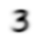

Practical Deep Learning for Coders: Lesson 3 Notes
fast.ai
Neural Networks
Gradient Descent
Author
Alex Liu
Published
October 17, 2023
Okay let’s go finally learning about what everyone want’s to know about when learning about AI and Machine Learning: stochastic gradient descent.
The first two lesson’s of this course had us familiarize ourselves with what a deep learning application looks like without really getting into any of the theory or inner workings. We used the fastai library that provides a layer of abstraction for the techniques used in fine-tuning and training models (as it should). Now we get into components of machine learning that so many other MOOCs start with right off the bat - loss functions and gradient descent. It was only inevitable.
Anyways, let’s get on with the notebook. The example we’re working through is an image classification model that can classify any image as a 3 or a 7. Or you could just go on r/truerateme for that.
Alright let’s import all our standard fastbook and fastai libraries.
Requirement already satisfied: fastbook in /opt/anaconda3/lib/python3.8/site-packages (0.0.29)
Requirement already satisfied: fastai>=2.6 in /opt/anaconda3/lib/python3.8/site-packages (from fastbook) (2.7.13)
Requirement already satisfied: datasets in /opt/anaconda3/lib/python3.8/site-packages (from fastbook) (2.14.5)
Requirement already satisfied: ipywidgets<8 in /opt/anaconda3/lib/python3.8/site-packages (from fastbook) (7.6.3)
Requirement already satisfied: requests in /opt/anaconda3/lib/python3.8/site-packages (from fastbook) (2.25.1)
Requirement already satisfied: pip in /opt/anaconda3/lib/python3.8/site-packages (from fastbook) (21.0.1)
Requirement already satisfied: sentencepiece in /opt/anaconda3/lib/python3.8/site-packages (from fastbook) (0.1.99)
Requirement already satisfied: pandas in /opt/anaconda3/lib/python3.8/site-packages (from fastbook) (1.2.4)
Requirement already satisfied: transformers in /opt/anaconda3/lib/python3.8/site-packages (from fastbook) (4.34.0)
Requirement already satisfied: graphviz in /opt/anaconda3/lib/python3.8/site-packages (from fastbook) (0.20.1)
Requirement already satisfied: packaging in /opt/anaconda3/lib/python3.8/site-packages (from fastbook) (20.9)
Requirement already satisfied: scikit-learn in /opt/anaconda3/lib/python3.8/site-packages (from fastai>=2.6->fastbook) (0.24.1)
Requirement already satisfied: spacy<4 in /opt/anaconda3/lib/python3.8/site-packages (from fastai>=2.6->fastbook) (3.7.2)
Requirement already satisfied: pyyaml in /opt/anaconda3/lib/python3.8/site-packages (from fastai>=2.6->fastbook) (5.4.1)
Requirement already satisfied: pillow>=9.0.0 in /opt/anaconda3/lib/python3.8/site-packages (from fastai>=2.6->fastbook) (10.1.0)
Requirement already satisfied: fastcore<1.6,>=1.5.29 in /opt/anaconda3/lib/python3.8/site-packages (from fastai>=2.6->fastbook) (1.5.29)
Requirement already satisfied: fastdownload<2,>=0.0.5 in /opt/anaconda3/lib/python3.8/site-packages (from fastai>=2.6->fastbook) (0.0.7)
Requirement already satisfied: torch<2.2,>=1.10 in /opt/anaconda3/lib/python3.8/site-packages (from fastai>=2.6->fastbook) (2.1.0)
Requirement already satisfied: torchvision>=0.11 in /opt/anaconda3/lib/python3.8/site-packages (from fastai>=2.6->fastbook) (0.16.0)
Requirement already satisfied: matplotlib in /opt/anaconda3/lib/python3.8/site-packages (from fastai>=2.6->fastbook) (3.3.4)
Requirement already satisfied: scipy in /opt/anaconda3/lib/python3.8/site-packages (from fastai>=2.6->fastbook) (1.6.2)
Requirement already satisfied: fastprogress>=0.2.4 in /opt/anaconda3/lib/python3.8/site-packages (from fastai>=2.6->fastbook) (1.0.3)
Requirement already satisfied: ipykernel>=4.5.1 in /opt/anaconda3/lib/python3.8/site-packages (from ipywidgets<8->fastbook) (5.3.4)
Requirement already satisfied: traitlets>=4.3.1 in /opt/anaconda3/lib/python3.8/site-packages (from ipywidgets<8->fastbook) (5.0.5)
Requirement already satisfied: widgetsnbextension~=3.5.0 in /opt/anaconda3/lib/python3.8/site-packages (from ipywidgets<8->fastbook) (3.5.1)
Requirement already satisfied: ipython>=4.0.0 in /opt/anaconda3/lib/python3.8/site-packages (from ipywidgets<8->fastbook) (7.22.0)
Requirement already satisfied: jupyterlab-widgets>=1.0.0 in /opt/anaconda3/lib/python3.8/site-packages (from ipywidgets<8->fastbook) (1.0.0)
Requirement already satisfied: nbformat>=4.2.0 in /opt/anaconda3/lib/python3.8/site-packages (from ipywidgets<8->fastbook) (5.1.3)
Requirement already satisfied: tornado>=4.2 in /opt/anaconda3/lib/python3.8/site-packages (from ipykernel>=4.5.1->ipywidgets<8->fastbook) (6.1)
Requirement already satisfied: appnope in /opt/anaconda3/lib/python3.8/site-packages (from ipykernel>=4.5.1->ipywidgets<8->fastbook) (0.1.2)
Requirement already satisfied: jupyter-client in /opt/anaconda3/lib/python3.8/site-packages (from ipykernel>=4.5.1->ipywidgets<8->fastbook) (6.1.12)
Requirement already satisfied: pygments in /opt/anaconda3/lib/python3.8/site-packages (from ipython>=4.0.0->ipywidgets<8->fastbook) (2.8.1)
Requirement already satisfied: prompt-toolkit!=3.0.0,!=3.0.1,<3.1.0,>=2.0.0 in /opt/anaconda3/lib/python3.8/site-packages (from ipython>=4.0.0->ipywidgets<8->fastbook) (3.0.17)
Requirement already satisfied: decorator in /opt/anaconda3/lib/python3.8/site-packages (from ipython>=4.0.0->ipywidgets<8->fastbook) (5.0.6)
Requirement already satisfied: setuptools>=18.5 in /opt/anaconda3/lib/python3.8/site-packages (from ipython>=4.0.0->ipywidgets<8->fastbook) (52.0.0.post20210125)
Requirement already satisfied: backcall in /opt/anaconda3/lib/python3.8/site-packages (from ipython>=4.0.0->ipywidgets<8->fastbook) (0.2.0)
Requirement already satisfied: pexpect>4.3 in /opt/anaconda3/lib/python3.8/site-packages (from ipython>=4.0.0->ipywidgets<8->fastbook) (4.8.0)
Requirement already satisfied: pickleshare in /opt/anaconda3/lib/python3.8/site-packages (from ipython>=4.0.0->ipywidgets<8->fastbook) (0.7.5)
Requirement already satisfied: jedi>=0.16 in /opt/anaconda3/lib/python3.8/site-packages (from ipython>=4.0.0->ipywidgets<8->fastbook) (0.17.2)
Requirement already satisfied: parso<0.8.0,>=0.7.0 in /opt/anaconda3/lib/python3.8/site-packages (from jedi>=0.16->ipython>=4.0.0->ipywidgets<8->fastbook) (0.7.0)
Requirement already satisfied: jsonschema!=2.5.0,>=2.4 in /opt/anaconda3/lib/python3.8/site-packages (from nbformat>=4.2.0->ipywidgets<8->fastbook) (3.2.0)
Requirement already satisfied: jupyter-core in /opt/anaconda3/lib/python3.8/site-packages (from nbformat>=4.2.0->ipywidgets<8->fastbook) (4.7.1)
Requirement already satisfied: ipython-genutils in /opt/anaconda3/lib/python3.8/site-packages (from nbformat>=4.2.0->ipywidgets<8->fastbook) (0.2.0)
Requirement already satisfied: pyrsistent>=0.14.0 in /opt/anaconda3/lib/python3.8/site-packages (from jsonschema!=2.5.0,>=2.4->nbformat>=4.2.0->ipywidgets<8->fastbook) (0.17.3)
Requirement already satisfied: six>=1.11.0 in /opt/anaconda3/lib/python3.8/site-packages (from jsonschema!=2.5.0,>=2.4->nbformat>=4.2.0->ipywidgets<8->fastbook) (1.15.0)
Requirement already satisfied: attrs>=17.4.0 in /opt/anaconda3/lib/python3.8/site-packages (from jsonschema!=2.5.0,>=2.4->nbformat>=4.2.0->ipywidgets<8->fastbook) (20.3.0)
Requirement already satisfied: ptyprocess>=0.5 in /opt/anaconda3/lib/python3.8/site-packages (from pexpect>4.3->ipython>=4.0.0->ipywidgets<8->fastbook) (0.7.0)
Requirement already satisfied: wcwidth in /opt/anaconda3/lib/python3.8/site-packages (from prompt-toolkit!=3.0.0,!=3.0.1,<3.1.0,>=2.0.0->ipython>=4.0.0->ipywidgets<8->fastbook) (0.2.5)
Requirement already satisfied: cymem<2.1.0,>=2.0.2 in /opt/anaconda3/lib/python3.8/site-packages (from spacy<4->fastai>=2.6->fastbook) (2.0.8)
Requirement already satisfied: weasel<0.4.0,>=0.1.0 in /opt/anaconda3/lib/python3.8/site-packages (from spacy<4->fastai>=2.6->fastbook) (0.3.3)
Requirement already satisfied: smart-open<7.0.0,>=5.2.1 in /opt/anaconda3/lib/python3.8/site-packages (from spacy<4->fastai>=2.6->fastbook) (6.4.0)
Requirement already satisfied: pydantic!=1.8,!=1.8.1,<3.0.0,>=1.7.4 in /opt/anaconda3/lib/python3.8/site-packages (from spacy<4->fastai>=2.6->fastbook) (2.4.2)
Requirement already satisfied: spacy-loggers<2.0.0,>=1.0.0 in /opt/anaconda3/lib/python3.8/site-packages (from spacy<4->fastai>=2.6->fastbook) (1.0.5)
Requirement already satisfied: murmurhash<1.1.0,>=0.28.0 in /opt/anaconda3/lib/python3.8/site-packages (from spacy<4->fastai>=2.6->fastbook) (1.0.10)
Requirement already satisfied: tqdm<5.0.0,>=4.38.0 in /opt/anaconda3/lib/python3.8/site-packages (from spacy<4->fastai>=2.6->fastbook) (4.66.1)
Requirement already satisfied: wasabi<1.2.0,>=0.9.1 in /opt/anaconda3/lib/python3.8/site-packages (from spacy<4->fastai>=2.6->fastbook) (1.1.2)
Requirement already satisfied: thinc<8.3.0,>=8.1.8 in /opt/anaconda3/lib/python3.8/site-packages (from spacy<4->fastai>=2.6->fastbook) (8.2.1)
Requirement already satisfied: catalogue<2.1.0,>=2.0.6 in /opt/anaconda3/lib/python3.8/site-packages (from spacy<4->fastai>=2.6->fastbook) (2.0.10)
Requirement already satisfied: typer<0.10.0,>=0.3.0 in /opt/anaconda3/lib/python3.8/site-packages (from spacy<4->fastai>=2.6->fastbook) (0.9.0)
Requirement already satisfied: spacy-legacy<3.1.0,>=3.0.11 in /opt/anaconda3/lib/python3.8/site-packages (from spacy<4->fastai>=2.6->fastbook) (3.0.12)
Requirement already satisfied: srsly<3.0.0,>=2.4.3 in /opt/anaconda3/lib/python3.8/site-packages (from spacy<4->fastai>=2.6->fastbook) (2.4.8)
Requirement already satisfied: numpy>=1.15.0 in /opt/anaconda3/lib/python3.8/site-packages (from spacy<4->fastai>=2.6->fastbook) (1.20.1)
Requirement already satisfied: jinja2 in /opt/anaconda3/lib/python3.8/site-packages (from spacy<4->fastai>=2.6->fastbook) (2.11.3)
Requirement already satisfied: langcodes<4.0.0,>=3.2.0 in /opt/anaconda3/lib/python3.8/site-packages (from spacy<4->fastai>=2.6->fastbook) (3.3.0)
Requirement already satisfied: preshed<3.1.0,>=3.0.2 in /opt/anaconda3/lib/python3.8/site-packages (from spacy<4->fastai>=2.6->fastbook) (3.0.9)
Requirement already satisfied: pyparsing>=2.0.2 in /opt/anaconda3/lib/python3.8/site-packages (from packaging->fastbook) (2.4.7)
Requirement already satisfied: annotated-types>=0.4.0 in /opt/anaconda3/lib/python3.8/site-packages (from pydantic!=1.8,!=1.8.1,<3.0.0,>=1.7.4->spacy<4->fastai>=2.6->fastbook) (0.6.0)
Requirement already satisfied: typing-extensions>=4.6.1 in /opt/anaconda3/lib/python3.8/site-packages (from pydantic!=1.8,!=1.8.1,<3.0.0,>=1.7.4->spacy<4->fastai>=2.6->fastbook) (4.8.0)
Requirement already satisfied: pydantic-core==2.10.1 in /opt/anaconda3/lib/python3.8/site-packages (from pydantic!=1.8,!=1.8.1,<3.0.0,>=1.7.4->spacy<4->fastai>=2.6->fastbook) (2.10.1)
Requirement already satisfied: idna<3,>=2.5 in /opt/anaconda3/lib/python3.8/site-packages (from requests->fastbook) (2.10)
Requirement already satisfied: certifi>=2017.4.17 in /opt/anaconda3/lib/python3.8/site-packages (from requests->fastbook) (2020.12.5)
Requirement already satisfied: urllib3<1.27,>=1.21.1 in /opt/anaconda3/lib/python3.8/site-packages (from requests->fastbook) (1.26.4)
Requirement already satisfied: chardet<5,>=3.0.2 in /opt/anaconda3/lib/python3.8/site-packages (from requests->fastbook) (4.0.0)
Requirement already satisfied: blis<0.8.0,>=0.7.8 in /opt/anaconda3/lib/python3.8/site-packages (from thinc<8.3.0,>=8.1.8->spacy<4->fastai>=2.6->fastbook) (0.7.11)
Requirement already satisfied: confection<1.0.0,>=0.0.1 in /opt/anaconda3/lib/python3.8/site-packages (from thinc<8.3.0,>=8.1.8->spacy<4->fastai>=2.6->fastbook) (0.1.3)
Requirement already satisfied: filelock in /opt/anaconda3/lib/python3.8/site-packages (from torch<2.2,>=1.10->fastai>=2.6->fastbook) (3.0.12)
Requirement already satisfied: sympy in /opt/anaconda3/lib/python3.8/site-packages (from torch<2.2,>=1.10->fastai>=2.6->fastbook) (1.8)
Requirement already satisfied: fsspec in /opt/anaconda3/lib/python3.8/site-packages (from torch<2.2,>=1.10->fastai>=2.6->fastbook) (2023.6.0)
Requirement already satisfied: networkx in /opt/anaconda3/lib/python3.8/site-packages (from torch<2.2,>=1.10->fastai>=2.6->fastbook) (2.5)
Requirement already satisfied: click<9.0.0,>=7.1.1 in /opt/anaconda3/lib/python3.8/site-packages (from typer<0.10.0,>=0.3.0->spacy<4->fastai>=2.6->fastbook) (7.1.2)
Requirement already satisfied: cloudpathlib<0.17.0,>=0.7.0 in /opt/anaconda3/lib/python3.8/site-packages (from weasel<0.4.0,>=0.1.0->spacy<4->fastai>=2.6->fastbook) (0.16.0)
Requirement already satisfied: notebook>=4.4.1 in /opt/anaconda3/lib/python3.8/site-packages (from widgetsnbextension~=3.5.0->ipywidgets<8->fastbook) (6.3.0)
Requirement already satisfied: prometheus-client in /opt/anaconda3/lib/python3.8/site-packages (from notebook>=4.4.1->widgetsnbextension~=3.5.0->ipywidgets<8->fastbook) (0.10.1)
Requirement already satisfied: argon2-cffi in /opt/anaconda3/lib/python3.8/site-packages (from notebook>=4.4.1->widgetsnbextension~=3.5.0->ipywidgets<8->fastbook) (20.1.0)
Requirement already satisfied: terminado>=0.8.3 in /opt/anaconda3/lib/python3.8/site-packages (from notebook>=4.4.1->widgetsnbextension~=3.5.0->ipywidgets<8->fastbook) (0.9.4)
Requirement already satisfied: nbconvert in /opt/anaconda3/lib/python3.8/site-packages (from notebook>=4.4.1->widgetsnbextension~=3.5.0->ipywidgets<8->fastbook) (6.0.7)
Requirement already satisfied: pyzmq>=17 in /opt/anaconda3/lib/python3.8/site-packages (from notebook>=4.4.1->widgetsnbextension~=3.5.0->ipywidgets<8->fastbook) (20.0.0)
Requirement already satisfied: Send2Trash>=1.5.0 in /opt/anaconda3/lib/python3.8/site-packages (from notebook>=4.4.1->widgetsnbextension~=3.5.0->ipywidgets<8->fastbook) (1.5.0)
Requirement already satisfied: python-dateutil>=2.1 in /opt/anaconda3/lib/python3.8/site-packages (from jupyter-client->ipykernel>=4.5.1->ipywidgets<8->fastbook) (2.8.1)
Requirement already satisfied: cffi>=1.0.0 in /opt/anaconda3/lib/python3.8/site-packages (from argon2-cffi->notebook>=4.4.1->widgetsnbextension~=3.5.0->ipywidgets<8->fastbook) (1.14.5)
Requirement already satisfied: pycparser in /opt/anaconda3/lib/python3.8/site-packages (from cffi>=1.0.0->argon2-cffi->notebook>=4.4.1->widgetsnbextension~=3.5.0->ipywidgets<8->fastbook) (2.20)
Requirement already satisfied: multiprocess in /opt/anaconda3/lib/python3.8/site-packages (from datasets->fastbook) (0.70.15)
Requirement already satisfied: xxhash in /opt/anaconda3/lib/python3.8/site-packages (from datasets->fastbook) (3.4.1)
Requirement already satisfied: dill<0.3.8,>=0.3.0 in /opt/anaconda3/lib/python3.8/site-packages (from datasets->fastbook) (0.3.7)
Requirement already satisfied: aiohttp in /opt/anaconda3/lib/python3.8/site-packages (from datasets->fastbook) (3.8.4)
Requirement already satisfied: pyarrow>=8.0.0 in /opt/anaconda3/lib/python3.8/site-packages (from datasets->fastbook) (13.0.0)
Requirement already satisfied: huggingface-hub<1.0.0,>=0.14.0 in /opt/anaconda3/lib/python3.8/site-packages (from datasets->fastbook) (0.17.3)
Requirement already satisfied: multidict<7.0,>=4.5 in /opt/anaconda3/lib/python3.8/site-packages (from aiohttp->datasets->fastbook) (6.0.4)
Requirement already satisfied: async-timeout<5.0,>=4.0.0a3 in /opt/anaconda3/lib/python3.8/site-packages (from aiohttp->datasets->fastbook) (4.0.2)
Requirement already satisfied: aiosignal>=1.1.2 in /opt/anaconda3/lib/python3.8/site-packages (from aiohttp->datasets->fastbook) (1.3.1)
Requirement already satisfied: frozenlist>=1.1.1 in /opt/anaconda3/lib/python3.8/site-packages (from aiohttp->datasets->fastbook) (1.3.3)
Requirement already satisfied: charset-normalizer<4.0,>=2.0 in /opt/anaconda3/lib/python3.8/site-packages (from aiohttp->datasets->fastbook) (3.0.1)
Requirement already satisfied: yarl<2.0,>=1.0 in /opt/anaconda3/lib/python3.8/site-packages (from aiohttp->datasets->fastbook) (1.8.2)
Requirement already satisfied: MarkupSafe>=0.23 in /opt/anaconda3/lib/python3.8/site-packages (from jinja2->spacy<4->fastai>=2.6->fastbook) (1.1.1)
Requirement already satisfied: cycler>=0.10 in /opt/anaconda3/lib/python3.8/site-packages (from matplotlib->fastai>=2.6->fastbook) (0.10.0)
Requirement already satisfied: kiwisolver>=1.0.1 in /opt/anaconda3/lib/python3.8/site-packages (from matplotlib->fastai>=2.6->fastbook) (1.3.1)
Requirement already satisfied: jupyterlab-pygments in /opt/anaconda3/lib/python3.8/site-packages (from nbconvert->notebook>=4.4.1->widgetsnbextension~=3.5.0->ipywidgets<8->fastbook) (0.1.2)
Requirement already satisfied: entrypoints>=0.2.2 in /opt/anaconda3/lib/python3.8/site-packages (from nbconvert->notebook>=4.4.1->widgetsnbextension~=3.5.0->ipywidgets<8->fastbook) (0.3)
Requirement already satisfied: mistune<2,>=0.8.1 in /opt/anaconda3/lib/python3.8/site-packages (from nbconvert->notebook>=4.4.1->widgetsnbextension~=3.5.0->ipywidgets<8->fastbook) (0.8.4)
Requirement already satisfied: testpath in /opt/anaconda3/lib/python3.8/site-packages (from nbconvert->notebook>=4.4.1->widgetsnbextension~=3.5.0->ipywidgets<8->fastbook) (0.4.4)
Requirement already satisfied: nbclient<0.6.0,>=0.5.0 in /opt/anaconda3/lib/python3.8/site-packages (from nbconvert->notebook>=4.4.1->widgetsnbextension~=3.5.0->ipywidgets<8->fastbook) (0.5.3)
Requirement already satisfied: bleach in /opt/anaconda3/lib/python3.8/site-packages (from nbconvert->notebook>=4.4.1->widgetsnbextension~=3.5.0->ipywidgets<8->fastbook) (3.3.0)
Requirement already satisfied: pandocfilters>=1.4.1 in /opt/anaconda3/lib/python3.8/site-packages (from nbconvert->notebook>=4.4.1->widgetsnbextension~=3.5.0->ipywidgets<8->fastbook) (1.4.3)
Requirement already satisfied: defusedxml in /opt/anaconda3/lib/python3.8/site-packages (from nbconvert->notebook>=4.4.1->widgetsnbextension~=3.5.0->ipywidgets<8->fastbook) (0.7.1)
Requirement already satisfied: async-generator in /opt/anaconda3/lib/python3.8/site-packages (from nbclient<0.6.0,>=0.5.0->nbconvert->notebook>=4.4.1->widgetsnbextension~=3.5.0->ipywidgets<8->fastbook) (1.10)
Requirement already satisfied: nest-asyncio in /opt/anaconda3/lib/python3.8/site-packages (from nbclient<0.6.0,>=0.5.0->nbconvert->notebook>=4.4.1->widgetsnbextension~=3.5.0->ipywidgets<8->fastbook) (1.5.1)
Requirement already satisfied: webencodings in /opt/anaconda3/lib/python3.8/site-packages (from bleach->nbconvert->notebook>=4.4.1->widgetsnbextension~=3.5.0->ipywidgets<8->fastbook) (0.5.1)
Requirement already satisfied: pytz>=2017.3 in /opt/anaconda3/lib/python3.8/site-packages (from pandas->fastbook) (2021.1)
Requirement already satisfied: threadpoolctl>=2.0.0 in /opt/anaconda3/lib/python3.8/site-packages (from scikit-learn->fastai>=2.6->fastbook) (2.1.0)
Requirement already satisfied: joblib>=0.11 in /opt/anaconda3/lib/python3.8/site-packages (from scikit-learn->fastai>=2.6->fastbook) (1.0.1)
Requirement already satisfied: mpmath>=0.19 in /opt/anaconda3/lib/python3.8/site-packages (from sympy->torch<2.2,>=1.10->fastai>=2.6->fastbook) (1.2.1)
Requirement already satisfied: safetensors>=0.3.1 in /opt/anaconda3/lib/python3.8/site-packages (from transformers->fastbook) (0.4.0)
Requirement already satisfied: tokenizers<0.15,>=0.14 in /opt/anaconda3/lib/python3.8/site-packages (from transformers->fastbook) (0.14.1)
Requirement already satisfied: regex!=2019.12.17 in /opt/anaconda3/lib/python3.8/site-packages (from transformers->fastbook) (2021.4.4)
Then we’ll download a our sample from MNIST containing images of 3s and 7s, and use the .ls method to put these items into a special fastai list that also displays the amount of items in the list.
Why don’t we take a look at one of them. Oh yeah that’s a 3 all right.
im3_path = threes[1]im3 = Image.open(im3_path)im3
Then we’ll turn the image into a 2-d array where the values represent the darkness of pixel. We then put this into put this into a dataframe with some condotional formatting to visualize that pixel’s darkness value…for some reason. It’s cool I guess
Question: How might a system that actually classifies 3s and 7s work? Well now we have a 28x28 grid of pixel values that visualizes a given digit. Perhaps we could create some grid that would represent a ‘perfect’ 3 and 7. A 7 would have a perfectly horizontal top line, maybe in row 2 or 3, that pivoted into a perfect slant as well. A 3 would have a couple of perfectly bulbous curves stacked ontop of one another. The values would be completely dark (with a value of 255) where the number is and 0 elsewhere.
We could then go cell by cell and find take the difference between the values that we’re seeing in the digit we’re trying to classify and our ‘perfect’ example, (and maybe even square those differences so that they’re all positive, and larger differences are given more weight than smaller ones) and then sum them up to get a sense of how much difference there is between any given digit and our standardized example.
Infact this is exactly what we’re going to do. We’ll create our representation of a ‘perfect’ 3 and 7 by averaging the values of each cell in our 28x28g grid for all of our 3s and 7s. We do this by using list comprehension to create a list of 2-D tensors that are all our examples of 3s or 7s. After that, we’ll use the torch.stack method to put this into a tensor itself, along the 0th dimension, which will orient each cell in the 28x28 grid with the corresponding cell on other pictures.
You can imagine this as printing a picture of each 3/7 on a piece of paper, and stacking all those papers ontop of each other. We then use the .mean method to find the mean across the dimension we pass in as a parameter - 0, which means across all of our different examples of 3s/7s. This is like shining a bright light on our stack of papers from above and observing the general shape that appears through the opacity.
seven_tensors = [tensor(Image.open(o)) for o in sevens]three_tensors = [tensor(Image.open(o)) for o in threes]stacked_sevens = torch.stack(seven_tensors).float()/255stacked_threes = torch.stack(three_tensors).float()/255mean3 = stacked_threes.mean(0)show_image(mean3);

Yeah that looks like a pretty average 3.
mean7 = stacked_sevens.mean(0)show_image(mean7);
And this looks like a pretty average 7. Good for us that this average 7 is actually perfect for us.
Now we’ll take the difference between the values in each cell/pixel for a given example to find how much it differs from our expectation of what a 3 or 7 should be. If we average these differences then it would offer us an idea of how different our digit is from our idea of a 3 or 7, and thus which one it is more likely to be. But just using the differences won’t be good enough since it might be positive or negative (the digit might be darker than our average for any particular pixel or vice versa).
Therefore if we use the absolute value of differences or square the differences before finding the average (and the taking the square root again to undo the square), it would make all our values positive. This is called the L1 and L2 norm respectively.
And the l1 and l2 norm of our digit to a 7. Since the norms are smaller for the 3, the interpretation is that it is less ‘different’ to our idea of a 3, thus more likely to be that digit, which is what we’ll classify it as.
Protip: Do this a lot simpler with the l1_loss and mse_loss functions inside torch.nn.functional. These functions are usually used to optimize the way we generate predictions for a given sample, which we’ll cover soon when going over gradient descent.
In this case, we’re using the loss a little differently, as it is directly informing our prediction. Either way, is our measurement of the average difference between our prediction, and the actual value. In this case, our ‘prediction’ of a 3/7 is the average we’ve calculated, and finding the difference (l1/l2 norm) between this and the digit being classified (our actual value) is the loss, where the category with the smallest loss is the one classify our digit as.
Now lets try and get a sense of how good this idea is. We’ll take a set of our data specifically for the purpose of evaluating the performance of our model (the validation set) and make a bunch of predictions for the validation set. Since we know what the correct classification for the digits in the validation set is, we can just calculate the percentage we classify corectly. We’ll create our validation set here:
valid_3_tens = torch.stack([tensor(Image.open(o)) for o in (path/'valid'/'3').ls()])valid_3_tens = valid_3_tens.float()/255valid_7_tens = torch.stack([tensor(Image.open(o)) for o in (path/'valid'/'7').ls()])valid_7_tens = valid_7_tens.float()/255valid_3_tens.shape,valid_7_tens.shape
We’ll also create a helper function to calculate the L1 norm of an image as compared to another image. This case, we are passing in the digit image being classified and our average 3. If you have a question about what the (-1,-2) argument in the mean() call is for, then I have just the thing for you. The thing for you being the answer to your question.
Notice we can pass in an entire tensor of images and get back a tensor of L1 norms. To do this, PyTorch uses ‘broadcasting’. This expands the tensor with a smaller rank to have the same size as the larger one, and then performs the operation on the tensors corresponding elements when they are the same size.
For this application, we have a rank-3 tensor (our list of 1000 or so rank-2 tensors which are our 28x28 images), and a rank-2 tensor, which is our 28x28 average digit. Broadcasting will create 1000 copies (in theory - in practice it doesn’t actually literally allocate memory for 1000 copies) of this rank-2 tensor, and subtract it from each of our 1000 images to be classified. Then we call abs to make all of the values in our rank-3 tensor positive. Now, for each of the 1000 images in our set, we want to find the average difference for a given pixel compared to our ‘average’ 3/7.
This is essentially summing all 784 (28 * 28) pixel difference values and dividing it by 784. PyTorch lets us do this without loops by specifying the axes to take the mean on. By negative indexing with (-1,-2), we are saying take the mean on the last and second to last axes of this tensor, which are our rows and columns of pixels for each training image, leaving us with a rank-1 tensor of size 1000. Compare this to how we created our average image of a 3/7 by calling .mean(axis=0), which took the mean across all our images, leaving a rank-2 tensor of size [28,28], which is almost a complementary operation.
Okay, after that wall of text our next step is a little easier to understand. If our difference (l1 norm) for a 3 is larger than it is for a 7, it is ‘farther away’ from what a 3 should be than a 7. Thus, we will just calculate the l1 norms for 3 & 7, and provide an output based on what is lower.
We’ll use broadcasting to apply this method to our validation set tensor. As it did in our mnist_distance(a,b) definition, it will expand the tensor with our average 3 and average 7 to the size of our x argument, which is our validation set, get the difference, absolute value, then average, and then perform an element-wise comparison on the values returned from both calls to mnist_distance()
is_3(valid_3_tens)
tensor([True, True, True, ..., True, True, True])
Then we can easily measure our accuracy by calling is_3 on the list of 3s in our validation set, where each of these should values should be True. We can use the mean() method here after converting the elements to float since Trues will convert to 1.0, while False will be 0.
Our accuracy for 7s is then calculated by using the same method on our list of 7s (where any True value pushing the mean above 0 is actually a 7 being misclassified as a 3), and then subtract that from 1.
WOW!!! That was actually a lot. But it didn’t really feel like artificial intelligence or machine learning or whatever fancy buzzword you want to call it now. All those calculations felt pretty straightforward, fixed, and mechanical. How can we put the intelligence in artifical intelligence?? Well you know what they say: you can’t spell ‘Machine LearSGDning’ without SGD!
So the basic loop for machine learning is 1. initialize weights 2. Predict 3. Calculate loss (a measurement of how far away your prediction is from the its actual label - basically how wrong your model is. We want to minimize this) 4. Calculate gradient and modify the weights based on this. The gradient is the rate of change of a function relative to one of the function’s parameters for a given value of that parameter. We apply this to our loss function, relative to the parameters of our model. Basically, how does our loss function change when we increment/decrement one of our model’s weights. If the gradient is positive, it means that increasing that weight will increase the lose (and thus make our model more inaccurate). A negative gradient means that increasing that weight will decrease the loss (and thus make our model more accurate). The inverse is also true, where decreasing a weight with a positive gradient will decrease the loss. As minimizing loss is our goal, we want to subtract this gradient from our weight, so that we move in the opposite direction of what will increase it. The magnitude of the gradient also tells us how large a change in the loss will result from a change in the weight. Therefore, we will make changes to the weight that are relative to the size of the gradient, which will be some fraction of the gradient based on our learning rate. 5. Repeat steps 2 - 4 until we stop (until the accuracy of our model is at a certain point, or after a predetermined amount of iterations)
Now lets apply this all to our digit classification. Instead of having an ‘average’ image of a 3 and 7 that we will compare our images to, lets try and create a mathematical formula that will tell us an image is a 3 or a 7. The quantitative data that we have to work with are the pixel intensity values of the image, so we will work with those. We have 784 pretty obvious numbers to use for any given image, so many we can find a weight for each of those pixels that will return a high value if a number is a 3 or a 7, and something low otherwise. We’ll use gradient descent to automate the creation of this equation.
We’ll put our pictures into a rank-2 tensor, with an element for each tensor of pixel values. Since our classification functions’s weights will be a 1-d tensor, we’ll format our picture tensors in 1 dimension as well with shape (784,1) rather than a 2-d one with shape (28,28). We’ll reshape our labels as well, so that it’s also a rank 2 tensor, with an element for each of our images that is a tensor (with just a single value in it) containing our images label. A will will represent that the image is a 3, and a 0 will represent it being a 7.
Now we’ll write a helper method that will just return a tensor of randomized values in the shape that we give it, which we’ll pass in the shape of one of our pieces of data (a tensor of size [784,1] representing all the pixel values of a given image) to it as an argument. We’ll also add in our bias. You might be familiar with the general linear equation y = mx+b. The b is our bias, and will just be a constant value that we add.
(train_x[0]*weights.T).sum() + bias
tensor([-6.2330], grad_fn=<AddBackward0>)
Now our prediction is given by taking the dot-product of one of our data points, with our weights (making sure to use the transpose of our weights so that their are properly oriented for matrix multiplication) and adding the bias.
This is just the prediciton for one of our data points. In order to make predictions for our set of images, we will matrix multiply the matrix that they’re contained in, with the matrix our weights are contained in.
Since our outputs from the matmul are random numbers, and our labels are either 1 or 0, then we’ll translate all of our outputs into a boolean by comparing it to 0.0. Then we’ll convert it to a 1 or 0 by calling .float(). Now, we can compare it to our known labels with “== train_y”. Now by converting these booleans to 1/0 again, and taking the mean of this tensor, it will give us the percentage of our predictions that were correct.
This is good at seeing well our model is doing, but it actually isn’t a good loss function for optimizing the weights in our predictive model. This is because this accuracy function will only change when a prediction that was previously incorrect or correct switches to the other category, which would probably require a large change in our models weights. Thus, the gradient will be 0 most of the time which won’t be of use to us.
Instead we’ll define a new loss function for ourselves. The way we’re predicting if a number is a 3 or 7 is if the output of our model is a 0, or higher. We will treat our predictions as probabilities that a certain number is a 3 or 7. If it is higher than .5, the model thinks it is more likely to be a 3 than a 7, and if less than .5, than it thinks it more likely to be a 7. With this, we will take our tensor of probabilities for all of our images, and use the .where() method which will use the first argument as a condition, and create a new tensor of the same size, filing in the values at the corresponding indices with the 2nd argument if the condition is true, otherwise with the 3rd argument (basically b[i] if a[i] else c[i]).
With this, we’ll be able to create a tensor of how accurate our probabilities were. If an image is a 3, then the value populated is 1 - prediction, which should be closer to 0 the higher the prediction, which is how sure we are it is a 3. If it is a 7, then it will also be closer to 0, the lower the prediction (which is equal to unsure we are it is a 3 aka how sure we are it is 7). Basically, if we are right, it is inversley proportional to how confident we were in that prediction, and if we were wrong, it will be directly proportional to how confident we were in that wrong answer.
WAIT! You have be thinking to yourself, probabilities should be between 1 and 0, but the output from our model can be of any size. It may be much greater than 1, or even negative. In order to get the output of our model into a number between 0 and 1, we’ll use something called the sigmoid function in order to resize our number into someting in this range. It’s defined below (but we’ll be using the one in the PyTorch library as it’s better optimized).
We’ll rewrite our loss function to transform the output of our model with the sigmoid function to get it in the range of 0 to 1.
So again, why did we do all of this when we originally had a metric that was literally our accuracy of the model? The accuracy metric was for human understanding, while this loss function is for the machine to learn from. It is easy for us to interpret the percentage of our predictions that are accurate, but it lacked a meaningful gradient because it was flat for much of the values of our models weights. So in the end, these functions have different attributes, and they serve different purposes.
Additionally, in our example we used our gradients to find out how we should adjust our parameters based on how they were performing across the entire dataset. In practice, this becomes very computationally demanding, and so we’ll use a practice called mini-batching in order to select subsets of our data that are small enough as to enable us to train a model efficiently, but large enough so that they’re still representative of our dataset. Choosing an effective mini batch size is an essential and important practice in itself.
Note - we’ll use stochastic gradient descent for the rest of the notebook, because we’re calculating the gradients for the loss and using it for updating our parameters after each data point, which is different from truly mini-batching or batch gradient descent where we calculate the gradient over the entire batch, take the average of those gradients, and that average to update our parameters.
Putting this all together, we’ll define calc_grad() which will create a prediction for a set of data based on our model, calculate the loss based on our defined loss function of mnist_loss, and calculate the gradient of the loss function.
Note: loss.backward adds the gradients of loss to any stored gradients, so we’ll have to reset the gradients after each call. The _() at the end of the method denotes that the object is modified in place.
def train_epoch(model, lr, params):for xb,yb in dl: calc_grad(xb, yb, model)for p in params: p.data -= p.grad*lr p.grad.zero_()
Now lets put this gradient calculation into our larger epoch (a pass through the data set or all our batches) training step. We’ll calculate the gradient, and for each one of our model’s parameters, update that weight (or the bias constant) based on the calculated gradient for that parameter and our learning rate. Then reset the gradient as discussed above.
Now let’s create a function using the sigmoid to facilitate the process of checking the accuracy of our predictions
Since the sigmoid will transform our output to a value between 0 and 1 then our threshold for where we consider ourselves more confident in a number being a 3 or a 7 is the halfway at 0.5. As the name implies, this will get the accuracy of the particular batch we’re working with.
def validate_epoch(model): accs = [batch_accuracy(model(xb), yb) for xb,yb in valid_dl]returnround(torch.stack(accs).mean().item(), 4)
Now we’ll write a helper method to get the accuracy of all of the batches in our validation set contained in our ‘valid_dl’ DataLoader by leveraging a call to batch_accuracy for all of our batches, and then taking the mean of those returned accuracies.
lr =1.params = weights,biastrain_epoch(linear1, lr, params)validate_epoch(linear1)for i inrange(20): train_epoch(linear1, lr, params)print(validate_epoch(linear1), end=' ')
With all of these parts - the loss function, our gradient calculation method, the epoch training method, and our methods to determine the accuracy of a batch, and the entire validation set, we can train our model, and see how much our model is improving because of it.
We’ll use the Linear module from Pytorch’s nn module to take care of our the functionality we defined in linear1. We’ll set the parameters with the .parameters method
class BasicOptim:def__init__(self,params,lr): self.params,self.lr =list(params),lrdef step(self, *args, **kwargs):for p inself.params: p.data -= p.grad.data *self.lrdef zero_grad(self, *args, **kwargs):for p inself.params: p.grad =None
Let’s also create a BasicOptim class that will take care of the optimizing functionality that we’ve created methods for, which is the part where we update our model weights using gradient descent.
Now let’s use the Linear module and our optimizer class to simply the code for training our model. The dl comes from a variable defined earlier in this notebook where we put our dataset into a DataLoader.
def train_model(model, epochs):for i inrange(epochs): train_epoch(model)print(validate_epoch(model), end=' ')
And we’ll also create a method that will run this train_epoch() method for a predetermined amount of epochs.
But this was actually all a prank because we have more fastai classes that will handle this functionality that we just defined for us. SGD will replace the BasicOptim class, and we are putting our training and validation dataloader into a DataLoaders class, so that we can use the Learner class’s .fit method, which will replace our train_model() method.
To use this Learner class, we must instanstiate it with our DataLoaders containing the training and validation set, the model (using the Linear class), our optimizing function, which is going to have the parameters of our model passed to it, along with the learning rate when we call .fit, along with our loss function and any metrics.
Then we call .fit with the number of epochs and learning rate as arguments
def simple_net(xb): res = xb@w1 + b1 res = res.max(tensor(0.0)) res = res@w2 + b2return resw1 = init_params((28*28,30))b1 = init_params(30)w2 = init_params((30,1))b2 = init_params(1)
Let’s put the linear function we just created a model for using gradient descent into an actual neural net. This will be comprised of two linear functions with a ReLU (rectified linear unit) in the middle. This is our nonlinear component that gives this composition even more flexibility in the problems it can solve. The ReLU is simply taking the max of the output, and 0 (turning any negative number we have to 0).
We initalize our first and second set of weights to be of size (784, 30) and (30,1) respectively. In order to have the proper size matrices for multiplication - we need to have the number of rows in the weight matrix be equal to the the number of columns in the input. In this case, we have a column for each of the image’s 784 pixels. The number of columns of our weight matrix will be equal to the amount of outputs we want to feed in as inputs to the next layer - which we will choose to be 30 a little bit arbitrarily. Now, since we only have two layers, the output of this next weight matrix should be a single number that will be used for our prediction, so this second weight matrix will only have 1 column to produce that singular output.
Using PyTorch, we can build out the same simple neural network with this code. The nn.Sequential model will call each of these layers in turn. We have our 2 Linear models that we used previously, sandwiching our ReLU layer.
After putting this new neural network model into our Learner and fitting it for a number of epochs, we can see the performance from our batch_accuracy metric doing better than just our simple single layered linear model.
BRUH. Wow we just basically implemented our first machine learning model and have gone over the foundational aspects that underlie every machine learning model with using some sort of optimization function (usually stochastic gradient descent) with respect to our loss function to tweak and optimize the parameters of our model. We’ve seen that once we have our data, a learning rate, and the architecture of our neural network, it’s actually basically just a formality to implement a deep learning model at that point and can be done in a few lines of code. The real work with deep learning comes before all that, in doing the necessary work to properly prepare all of those components, and determine what optimal hyperparameters are.
Let’s cap off this lesson with a celebration: going over some jargon that will be necessary to continue our understanding of this subject. As you’ve just seen, none of this is actually particularly complicated. And at this point, we have the luxury of having very powerful machines do all of the manual computation for us. Thus, in order for academics and practioners in this field to make themselves feel better about themselves, they introduced a lot of complicated sounding jargon to make what they were talking about more mystical and technical than it really is. Here’s a breakdown:
Activations - The numbers calculated by our layers. The number that we put into the sigmoid to give us our probability that a certain image was a 3 or 7 was an activation.
Parameters - Numbers that we use to calculate these activation values. They are the weights of our model. In this excercise, they were the 784 values that we multiplied by each corresponding pixel value in a given image by, as well as our bias.
Tensors - regularly shaped arrays. They have a rank, which is equal to the number of axes/dimensions they have. For example:
Rank-0 Tensor: Scalar (a single value) Rank-1 Tensor: Vector (a list of scalars) Rank-2 Tensor: Matrix (a list of vectors aka a list of a list of scalars) Thus, a Rank-3 Tensor would be a list of matrices, a rank-4 would be matrix of matrices (wtf trippy) and so on and so forth.